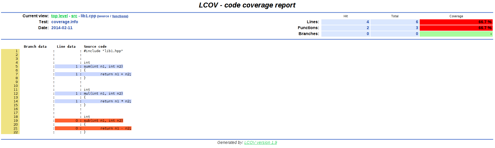

C++ code coverage by tests
Code coverage by tests
We will continue on unit testing the code. But this time I'll show you how to check which part of code is covered by tests and which is not. Such information becomes useful when analyzing how well your code is tested. And the more code is tested, the more stable it can be considered.
In computer science, code coverage is a measure used to describe the degree to which the source code of a program is tested by a particular test suite. A program with high code coverage has been more thoroughly tested and has a lower chance of containing software bugs than a program with low code coverage.
Setup environment
Prerequisites:
GNU g++ compiler
CMake, make
These tools are all available on linux systems. On Debian:
Create sample project
You can get a sample from github:
We'll use the same project structure as in C++ unit tests with googletest:
. |__ googletest-cmake |__ lib | |__ googletest -> ~/dev-tools/gtest-1.7.0 |__ src | |__ lib1.cpp | |__ lib1.hpp |__ test | |__ lib1_test.cpp |__ CMakeLists.txt |__ Makefile
But this time i'm not going to describe how to create the project itself, you can get it from github.
Although there are few differences in build scripts compared to C++ unit tests with googletest that I would like to mention:
CMakeLists.txt
cmake_minimum_required (VERSION 2.6) project (Lib1 CXX) set (CMAKE_CXX_FLAGS "-ggdb -fprofile-arcs -ftest-coverage") set (CMAKE_EXE_LINKER_FLAGS "-fprofile-arcs -ftest-coverage") set (SRC_DIR "${CMAKE_CURRENT_SOURCE_DIR}/src") include_directories ("${SRC_DIR}") file (GLOB_RECURSE SRC_FILES "${SRC_DIR}/*.cpp") # Compiles static lib that will be linked with tests. set (LIB_NAME "lib1") add_library ("${LIB_NAME}" STATIC ${SRC_FILES}) # Include googletest. set (GTEST_DIR "${CMAKE_CURRENT_SOURCE_DIR}/lib/googletest") add_subdirectory (${GTEST_DIR}) include_directories ("${GTEST_DIR}/include") # Build tests executable. set (TEST_EXEC "${LIB_NAME}_test") set (TEST_SRC_DIR "${CMAKE_CURRENT_SOURCE_DIR}/test") file (GLOB_RECURSE TEST_SRC_FILES "${TEST_SRC_DIR}/*.cpp") add_executable ("${TEST_EXEC}" ${TEST_SRC_FILES}) target_link_libraries ("${TEST_EXEC}" "${LIB_NAME}" "gtest" "gtest_main")
This CMake sets specific compiler (CMAKE_CXX_FLAGS) and linker (CMAKE_EXE_LINKER_FLAGS) flags "-fprofile-arcs" and "-ftest-coverage".
When these flags are set, compiler injects profiling code that collects data about program execution: e.g. which line how much times was executed.
Makefile
BUILD_DIR = build all: test test-run coverage test: $(BUILD_DIR) cd $(BUILD_DIR); cmake $(CURDIR); make test-run: $(BUILD_DIR)/lib1_test coverage: lcov --capture --directory $(BUILD_DIR) \ --output-file $(BUILD_DIR)/coverage.info genhtml $(BUILD_DIR)/coverage.info \ --output-directory $(BUILD_DIR)/coverage-report $(BUILD_DIR): mkdir -p $@ clean: rm -rf $(BUILD_DIR) .PHONY: all cmake clean coverage test test-run
This Makefile compared to unit test project Makefile contains target "coverage". This target runs lcov command that collects coverage data and generates HTML output.
Compile, run tests and build coverage report
All thsese steps are programmed in Makefile script, so simply invoke "make".
As a result it will
build tests in build directory;
run tests executable;
this executable will generate *.gcda and *.gcno files, which contain code execution information. Do not worry about these files, lcov tool will take care of them for us.
And finally it will run lcov tool that locates and parses execution data automatically for us and creates html output.
You can see the results in here.
Analysis report
In our sample code coverage by tests report is built in "./build/coverage-report". This directory contains "index.html". Simply open it in your web browser and you should be all set.
Do not worry if you see a lot of source files indicated by red color. This actually means that only a small part of this code was executed. But mostly these files are c++ standard libraries.
Simply navigate to src/lib1.cpp - this is the source file we were testing and we are interested in how many lines of this file our tests executed.
Analyzing our library sources
Analyzing further you'll see that the situation is not that bad.
Our sample tests cover 66% of lib1.cpp code. And this report show which lines in code were executed and which were not. So based on these results you can supplement your test cases.
References
Comments